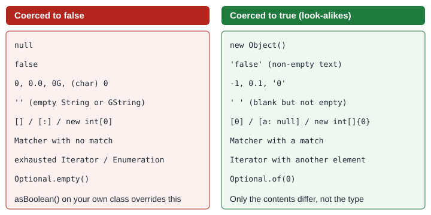

Booleans & the Groovy Truth
|
This content was generated with the assistance of AI and should be verified against the official documentation before being relied on in production. |
This page is written against Groovy 6.0 (6.0.0, 2026-09-22) and every example was run with Groovy 6.0.0 on JDK 26 on
2026-10-14. Groovy has the boolean literals true and false like Java, but it also lets any object stand where
a condition is expected: if (list), while (line), assert name, x ? a : b and !value all apply a set of
coercion rules known as the Groovy Truth. The rules are small and uniform, but they are also the source of a few
classic bugs (0, '' and empty collections are all false), so this page lists them exhaustively and shows how to
override them for your own classes. The statements that consume a condition are covered in
Control Structures; the operators that produce booleans in
Operators: Arithmetic, Relational & Logical.
The boolean literals
Groovy has two boolean literals, true and false. In dynamic code a boolean variable is a java.lang.Boolean
at runtime (primitives are boxed when they flow through the dynamic call machinery), and the logical operators &&,
||, ! and ^ work as in Java. Unlike Java, a Boolean may hold null, and &&/|| always yield a boolean
(never one of their operands).
boolean open = true
Boolean maybe = null
def done = false
assert open instanceof Boolean // primitives are boxed in dynamic code
assert !done
assert maybe == null
assert (true && false) == false
assert (true || false)
assert (true ^ true) == false // exclusive or
assert !(open && !open)
println([open.class.name, true.class.name, (1 < 2).class.name])[java.lang.Boolean, java.lang.Boolean, java.lang.Boolean]Comparison operators such as ==, < and != produce booleans, and == is value equality (it calls equals or
compareTo) rather than identity; see
Operators: Arithmetic, Relational & Logical.
For the Java side of this comparison see
Java: Primitive Types & Variables.
The Groovy Truth
When a value that is not already a Boolean appears where a condition is expected, Groovy calls the GDK method
asBoolean() on it. The same coercion happens for !x, for x as boolean, for x ? a : b and x ?: y, in assert,
in if/while/for conditions, in &&/|| operands, and when a value is assigned to a boolean-typed variable,
parameter or return type. The built-in rules are:
| Type | True when | False when |
|---|---|---|
|
the value is |
|
|
it has at least one element |
it is empty |
|
it has at least one entry |
it is empty |
|
it is non-empty (a blank string like |
it is empty |
|
it is non-zero |
it is zero ( |
|
the input contains at least one match |
there is no match |
|
it has more elements |
it has no further elements |
|
a value is present (even |
it is empty |
any other object reference |
it is not |
it is |

The rules look at the container, not at what is inside it, which is why [0], [null] and [a: null] are all true.
The following script prints the coercion of a representative set of values, using value as boolean:
def samples = [
'true Boolean' : true,
'false Boolean' : false,
'null' : null,
'empty list' : [],
'list [0]' : [0],
'empty map' : [:],
'map [a: null]' : [a: null],
'empty string' : '',
'blank string' : ' ',
"'false' string" : 'false',
'int 0' : 0,
'double 0.0' : 0.0,
'BigDecimal 0.00': 0.00,
'int -1' : -1,
'char 0' : (char) 0,
'empty array' : new int[0],
'array [0]' : new int[] {0},
'no-match Matcher': ('abc' =~ /\d/),
'match Matcher' : ('a1' =~ /\d/),
'empty iterator' : [].iterator(),
'Optional.empty' : Optional.empty(),
'Optional.of(0)' : Optional.of(0),
'new Object()' : new Object(),
]
samples.each { label, value -> printf('%-18s -> %s%n', label, value as boolean) }true Boolean -> true
false Boolean -> false
null -> false
empty list -> false
list [0] -> true
empty map -> false
map [a: null] -> true
empty string -> false
blank string -> true
'false' string -> true
int 0 -> false
double 0.0 -> false
BigDecimal 0.00 -> false
int -1 -> true
char 0 -> false
empty array -> false
array [0] -> true
no-match Matcher -> false
match Matcher -> true
empty iterator -> false
Optional.empty -> false
Optional.of(0) -> true
new Object() -> trueCollections, arrays and maps
Non-empty collections, arrays and maps are true. Because only the size matters, an element that is itself false does not change the result.
assert ![] // empty list
assert [0] // non-empty list, even though its element is 0
assert [null]
assert ![:] // empty map
assert [a: null]
assert !(new int[0])
assert new int[] {0}
assert !([] as Set)Strings and numbers
Any non-empty CharSequence is true, including 'false' and ' ': Groovy does not parse text, so
'false' as boolean is true. Use Boolean.valueOf('false') (or Boolean.parseBoolean) when you really have a
textual boolean. Numbers of every type, including BigDecimal and BigInteger, are false only when they are zero.
Character follows the same rule (the NUL character is false).
assert !''
assert ' ' // blank but not empty
assert 'false' // any non-empty text
assert !0
assert 0.1
assert !0.0
assert !(0.0G)
assert !(0G)
assert -1
assert Boolean.valueOf('false') == false
assert ('false' as boolean) // truthy text, not parsedSource: Groovy documentation: Semantics, strings and numbers
Matchers, iterators and enumerations
A Matcher is true when the input contains at least one match, which is what makes the idiom
if (text =~ /pattern/) work (see Regular Expressions).
In Groovy 6.0.0 the test is repeatable: it does not consume the match, so you can test a matcher several times and read
the first match afterwards, and a matcher you have already stepped through with find() is true again as long as the
input has any match (the coercion starts again from the beginning).
def m = 'a1b2' =~ /\d/
assert m.find() && m.group() == '1'
assert m.find() && m.group() == '2'
assert m // truth test starts again from the beginning
assert m.group() == '1'
def none = 'abc' =~ /\d/
assert !none
assert none.count == 0
println 'ok'okIterators and enumerations are true while they still have elements, so they are consumed by use, unlike collections:
assert [0].iterator()
assert ![].iterator()
Vector<Integer> v = [0] as Vector
Enumeration<Integer> e = v.elements()
assert e
e.nextElement()
assert !e
println 'enumeration ok'enumeration okOptional and other object references
Any object reference that is not null is true. The GDK extends that rule for java.util.Optional: an empty
Optional is false and a present one is true, whatever it holds (Optional.of(0) is true). Everything not covered by
a more specific rule, such as new Object() or a domain object, is true when it is not null and false when it is
null.
Customising the truth with asBoolean()
To change how your own classes are evaluated, implement a no-argument method boolean asBoolean(). Groovy calls it
whenever it needs to coerce an instance. The method receives the object as this, so it can inspect any state. In the
greenhouse scenario a greenhouse is considered "usable" only when it has a name and at least one reading:
class Greenhouse {
String name
List<Integer> readings = []
boolean asBoolean() { name && readings }
}
assert !new Greenhouse()
assert !new Greenhouse(name: 'north')
assert new Greenhouse(name: 'north', readings: [21])
def g = new Greenhouse(name: 'north')
if (g) println 'truthy' else println 'no readings yet'no readings yetThe final expression name && readings is itself evaluated with the Groovy Truth, and && returns a
real boolean, so the method honours its return type. For a class you do not own, an
extension module or a category from
Metaclasses, ExpandoMetaClass & Categories
can supply asBoolean() instead. Groovy also lets you coerce explicitly with as boolean, or normalise to a real
Boolean with the double negation !!:
assert (0 as boolean) == false
assert ([1] as boolean)
assert 'x'.asBoolean()
assert !(null as boolean)
assert !!'abc' == true
assert ('a' && 'b') == true // && and || return booleans, not operands
assert ('' || 'z') == trueStatic compilation and typed declarations
The truth rules also apply in statically compiled code, so @CompileStatic does not force you to write
!list.isEmpty(). A boolean return type, a boolean variable or a parameter coerces its argument with the same
rules, and a null is stored as false:
import groovy.transform.CompileStatic
@CompileStatic
class Check {
static String describe(List<Integer> xs) { xs ? "has ${xs.size()}" : 'empty' }
static boolean flag(String s) { s } // implicit truth coercion on return
}
assert Check.describe([]) == 'empty'
assert Check.describe([4]) == 'has 1'
assert Check.flag('x') && !Check.flag('')
boolean primitive = 'text' // assigned through truth
assert primitive
boolean fromNull = null
assert fromNull == false
println 'ok'okMore on static checking in Static Type Checking & @CompileStatic.
Pitfalls
Falsy but meaningful values
The convenience of the rules is also their danger: a perfectly valid 0, 0.0, '' or empty list is false. Three
recurring traps:
-
findreturns the matching element, so when the match is0,''orfalsethe result is found but falsy. Useany,contains,indexOfor compare withnull/!= -1when the element itself can be falsy. -
Map values:
if (map.hits)is false both when the key is missing and when it is0. UsecontainsKeyto distinguish the two. -
Filtering with a bare closure (
findAll,count { it }) keeps only truthy values, which silently drops zeros, empty strings andfalse.
def m2 = [:]
m2.hits = 0
assert !m2.hits
assert m2.containsKey('hits')
assert m2.hits == 0
assert [0, 1].find { it == 0 } == 0
assert ![0, 1].find { it == 0 } // pitfall: found but falsy
assert [0, 1].any { it == 0 } // use any / contains / indexOf
assert [0, 1].contains(0)
println([0, 1, '', 'a', null, [], [1], false].findAll())
println([0, 1, '', 'a', null, [], [1], false].count { it })[1, a, [1]]
3Elvis operator versus truthiness
The Elvis operator ?: tests its left operand with the Groovy Truth, not with != null. That makes it a good default
for "missing or empty" strings and collections, and a bug for numbers where 0 is a legitimate value. When only
null should trigger the default, use an explicit ternary or the null-safe tools from
Object Operators.
def temp = 0
def shown = temp ?: 20
assert shown == 20 // 0 is false, so Elvis replaces a legitimate 0
def shown2 = temp != null ? temp : 20
assert shown2 == 0
String label = ''
assert (label ?: 'unnamed') == 'unnamed'
assert ([] ? 'full' : 'empty') == 'empty'
Boolean flag = null
assert !flag
assert flag != false // null is falsy but not equal to false
def list = null
assert (list?.size() ?: 0) == 0The last two lines show the usual split: flag != false shows that a null Boolean is not false for
equality, while the null-safe ?. combined with ?: provides a default size of zero. See also
Optionality.
Other points to remember
-
x == trueis almost never what you want:'abc' == trueisfalseeven though'abc'is true. Writeif (x)orx as boolean. -
A
Booleanfield holdingnullis falsy in conditions, so unlike Java it does not throw aNullPointerExceptionwhen unboxed inif (flag). -
Properties of type
booleanare declared like any other; see Classes, Fields & Properties. -
Assertions use the same rules, so
assert listfails for an empty list; see Assertions & Power Assert.
Where the book is outdated
The book consulted for this section (see the section bibliography) describes the Groovy Truth as it stood in the 1.x
era. Treat its rule list as a starting point only: the official documentation page referenced below is the current,
versioned list, and the GDK adds coercions for types the book does not mention, such as Optional. Always confirm a
surprising case by running value as boolean in
groovysh, as the examples above do.